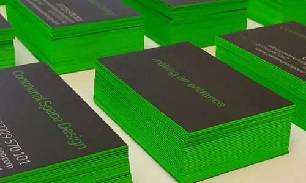

Choose a print-ready PDF to check, or drag one onto this window
Rendering…
Choose a print-ready PDF to check, or drag one onto this window
White is set to overprint here. Overprinted white disappears completely on press, so these objects won't print.
These fonts aren't embedded in the PDF. The printer will substitute other fonts, so the text may look different or reflow. Re-export the PDF with fonts embedded, or convert the text to outlines.
has changes that haven't been saved. If you close it now they'll be lost; your original PDF is untouched either way.
Version 1.0.1
A free tool for checking print-ready PDFs: overprint, separations, ink values, trim and bleed, RGB and spot colours.

Made by Chris from Mangoprint.co.uk, home of the coloured edge business cards.
Mangoprint Prepress PDF is free to use.
Many coffees were and continue to be consumed whilst developing this app. Buy Chris a coffee 😊
Mangoprint Prepress PDF is free and open-source software, licensed AGPL-3.0.